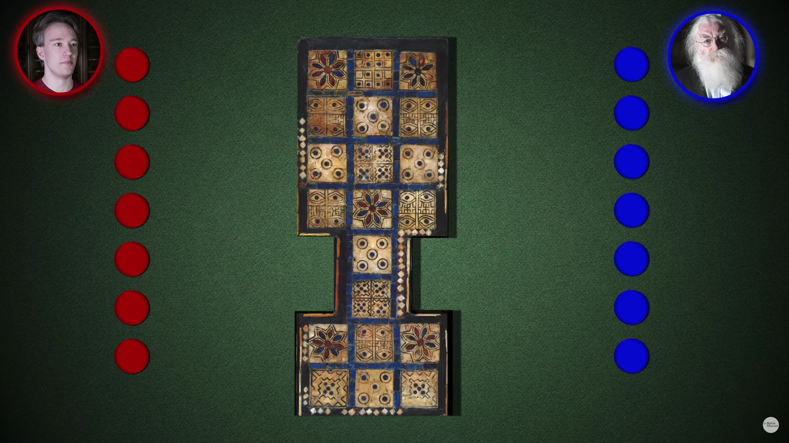

The Royal Game of Ur
The Royal Game of Ur with expectiminimax AI.
Quick Start Guide
Get the prerequisites, if you don't have them already.
sudo apt-get update sudo apt-get install -y gcc git make
Download, build, and run the repo code.
git clone https://github.com/kirklange/royal-game-of-ur.git cd royal-game-of-ur make init make build make run
test_ai is the default project. To change which project gets built and run, see the Make It! section.
Game Rules Description
This game has four tetrahedral dice. Two of the four corners of the tetrahedron are marked with a white dot. The amount of moves a player gets is equivalent to the amount of dots pointing up after a roll. Rolling a 0 means you lose that turn. The probability of rolling n moves is as follows:
| 0 | 1 | 2 | 3 | 4 |
|---|---|---|---|---|
| 1/16 | 1/4 | 3/8 | 1/4 | 1/16 |
After rolling the dice, you can choose to either add a piece on the board on the nth tile, or move a piece already on the board n tiles forward. You can't sub-divide the moves. Each tile can only house one game piece.
There are two players. Each starts in the notch on their own side of the board. Each piece must go up their row (starting on the four-tile segment), down the middle row, then back around to the notch in order to complete its tour around the board. In order to move off the board you must have the exact number of required moves in order to do so. For example, if a piece is on the very last tile, you must roll exactly a 1 in order to move that tile off the board. The first player to have all seven of their pieces go around the board wins.
Snapshot taken from this video at 3m49s.
On the shared center row, players can land on each other and reset the victim piece back to its starting position. Landing on a flower tile grants an extra turn and dice roll. Being on a flower tile protects you from enemy pieces (i.e. they can't land on you).
AI Implementation
This AI uses the same minimax algorithm I used in a class assignment for the Othello board game, except it has been adapted for stochastic games. To account for the probabilistic nature of the game, the values of the chance nodes are the weighted average of each possible dice roll.
Proof of Competence
Below is an example output of test_ai, formatted into a pretty spreadsheet. Galileo is the maximizer. Simplicio is the minimizer. Galileo is always at least as good as Simplicio.
Interestingly, there is little benefit to looking ahead more than a couple moves. I suspect this is because we are dealing with a stochastic game; the further you look ahead, the less likely it is that the game will end up where you are trying to force it to go.
Make It!
The following are various unit tests for this project, including the main game itself.
test_diceThe most basic test, it prints out a 10x10 table of dice rolls.test_boardThis verifies whether the board initializes correctly or not.test_aiThis benchmarks the AI, comparing it against random agents and agents with less lookahead than itself.main_rguThe main game itself. The program will ask you an initial set of questions like whether you want each player to be a human or an AI. This program will print out the board and its utility value after each turn.
To change which project gets built and run, modify the MAIN_SUBDIR variable in Makefile.
Code Documentation
As of now the doc strings in the header files are incomplete, though the function names themselves are fairly verbose. The longer source files are well documented.
Note: Because I implemented this project in C89 "for fun", you won't see any bool types where you might expect them, among other oddities related to C89. A future improvement could be creating typedefs for bools and error codes.
Copyright
Copyright (c) 2018 Kirk Lange https:/
This software is provided 'as-is', without any express or implied warranty. In no event will the authors be held liable for any damages arising from the use of this software.
Permission is granted to anyone to use this software for any purpose, including commercial applications, and to alter it and redistribute it freely, subject to the following restrictions:
- The origin of this software must not be misrepresented; you must not claim that you wrote the original software. If you use this software in a product, an acknowledgment in the product documentation would be appreciated but is not required.
- Altered source versions must be plainly marked as such, and must not be misrepresented as being the original software.
- This notice may not be removed or altered from any source distribution.